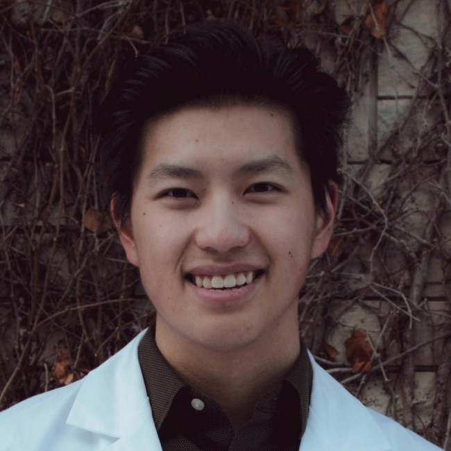

Ricky Hu
Ricky is a 2nd year medical student at Queen's University. He completed a MASc in Biomedical Engineering at UBC, building machine learning methods for classification of fetal ultrasound images. He completed a BASc in Engineering Physics and Mathematics at UBC.

Prashant Pandey
Prashant is a PhD Vanier Scholar in Biomedical Engineering at UBC, working on ultrasound-based orthopaedic surgical navigation with machine learning. He previously completed a MASc developing real-time ultrasound bone segmentation for pelvic fractures.

Zoe Hu
Zoe is a 3rd year medical student at Queen's University, with research work in 3D segmentation of ultrasound images with machine learning. Zoe completed a BSc in computer science at McGill and worked as a software engineering intern at Quora and Facebook.

Olivia Yau
Olivia is a 2nd year medical student at UBC, previously completing a MSc in experimental medicine at Queen's University. She has worked in developing novel echocardiography contrast methods for atherosclerosis therapy.

Rohit Singla
Rohit is a 3rd year MD/PhD at UBC, working on automated anlaysis of renal ultrasound in his PhD. He previously completed a MASc in Biomedical Engineering at UBC with work in developing augmented reality for surgical guidance.

Kevin Fan
Kevin is a 4th year medical student at UBC, who has pioneered the AI in Medicine club and the AI for Medical Students workshop in 2019.

Patrick Wang
Patrick Wang is a third year medical student at Queen's University. His interest in AI started in his first year after being involved in various research projects related to ophthalmology imaging. Before medical school, Patrick studied Health Sciences at McMaster University for three years. In his free time, he enjoys cooking and photography.

Minnie Teng
Minnie is a 1st year medical student at UBC. She previously completed a BSc and MScOT at UBC and worked as a data science fellow with the BCCDC to forecast wildfire smoke.

Mishal Ashraf
Mishal is a 2nd year MASc student in Biomedical Engineering at UBC. His research focuses on developing hardware and software for the acquisition and analysis of high-dimensional microscopy data with applications in cardiac electrophysiology research.